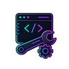
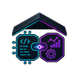
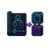
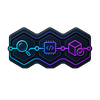

Миграция с SAP на 1С:ERP
Производственная компания (500+ сотрудников). Поэтапная миграция с SAP ERP на 1С:ERP с кастомными модулями в рамках импортозамещения.
- 0 простоя
- 8 мес миграция
- −40% на лицензиях

Разрабатываем ПО любой сложности для автоматизации бизнеса
Переводим задачи бизнеса на язык разработки: интервью и сбор требований, описание бизнес-процессов as-is/to-be, спецификации и постановка задач команде. Проект под ключ или аналитик в вашу команду.
Требования, процессы и спецификации до старта проекта — чтобы смета и сроки строились на фактах.
Глубокий вариант — предпроектное обследование с оценкой вариантов решения.
Формализуем процессы компании: схемы as-is, узкие места, целевые процессы to-be.
База для автоматизации и внутренних регламентов.
Превращаем договорённости в техническое задание, по которому можно объявлять тендер или принимать работу подрядчика.
Разработка ТЗ — отдельной услугой с фиксированной сметой.
Бизнес- или системный аналитик выходит в ваши спринты и процессы под вашим управлением.
Модель аутстаффинга: оплата за фактические часы, выход от 3 рабочих дней.
Пакет артефактов под вашу задачу: схемы процессов в BPMN, реестр требований, спецификации и прототипы, ТЗ — согласованные с бизнесом и понятные разработке.
Главный результат — смета и сроки будущей разработки строятся на фактах: меньше переделок и «сюрпризов» в середине проекта.
Артефакты передаём в рабочем виде — Confluence, Miro, Jira или ваши инструменты: требования можно поддерживать и развивать, а не хоронить в PDF.
Каждое требование трассируется к бизнес-цели: в спорных ситуациях команда возвращается к источнику, а не к пересказам.

Каждый артефакт проверен практикой: по нашим требованиям строят системы, которые потом живут годами.

Бизнес- и системный анализ не разорваны между людьми: тот, кто говорил с вашим бизнесом, сам пишет спецификации для разработчиков.

Требования формулируем проверяемыми, схемы — в стандартном BPMN: любой подрядчик или ваша команда смогут работать с результатом.

После анализа можем сами разработать систему — от ТЗ до релиза и поддержки. Анализ засчитывается как первый этап проекта.
Отрасли
Внедряем решения с учётом отраслевой специфики — от финтеха и ритейла до промышленности и медицины.
Описание бизнес-процессов — от 90 000 ₽, анализ с подготовкой ТЗ — от 150 000 ₽, аналитик в вашу команду — от 1 500 ₽/час. У компаний из топа выдачи ставки — от 1 800 ₽/час, проекты — от 60–150 тыс. ₽. Смету фиксируем после короткого созвона.
Бизнес-аналитик отвечает на вопрос «что нужно бизнесу и зачем»: процессы, цели, выгоды. Системный — «как это должно работать»: данные, интеграции, спецификации для разработчиков. В наших проектах обе роли закрывает одна команда.
Ошибка в требованиях, найденная после релиза, стоит в разы дороже, чем на бумаге. Анализ сокращает переделки, уточняет смету до старта и защищает от «а мы имели в виду другое» в середине проекта.
Согласованный пакет артефактов: схемы процессов as-is/to-be, реестр требований, спецификации, прототипы, при необходимости — полноценное ТЗ для разработки или тендера.
Да, схемы процессов делаем в стандартной нотации BPMN — их понимает любой аналитик и подрядчик. Для нетехнических заказчиков дублируем понятными схемами и текстом.
Да, это формат аутстаффинга: бизнес- или системный аналитик работает в ваших спринтах под вашим управлением, оплата — по фактическим часам. Выход — от 3 рабочих дней.
Проверим его: полнота, противоречия, реализуемость. Часто «готовое ТЗ» описывает экраны, но не процессы и данные — доработаем документ до состояния, по которому можно строить и принимать работу.
Предпроектное обследование — глубокое погружение перед большим проектом: аудит процессов и систем, оценка вариантов, смета. Анализ — более широкая услуга: от описания процессов до сопровождения разработки. Часто обследование — первый шаг анализа.
NDA подписываем до интервью и доступа к данным. Материалы анализа принадлежат вам и не используются вне проекта.
Три пути: отдаёте артефакты своей команде, объявляете тендер с нашим ТЗ или продолжаете с нами — разработка в BUDGET SOFT начинается сразу, анализ засчитывается как первый этап проекта.
Производственная компания (500+ сотрудников). Поэтапная миграция с SAP ERP на 1С:ERP с кастомными модулями в рамках импортозамещения.

200+ единиц оборудования в реальном времени

Конверсия +32%, время загрузки −45%

120k+ пользователей, аптайм 99.98%

Онбординг −60%, MRR ×2.4

Распознавание лица < 1 сек, FAR 0.001%
Расскажите о задаче — предложим формат анализа и зафиксируем смету.
Обычно отвечаем в течение рабочего дня.
Расскажите о задаче — подберём формат и сроки. Обычно отвечаем в течение рабочего дня.